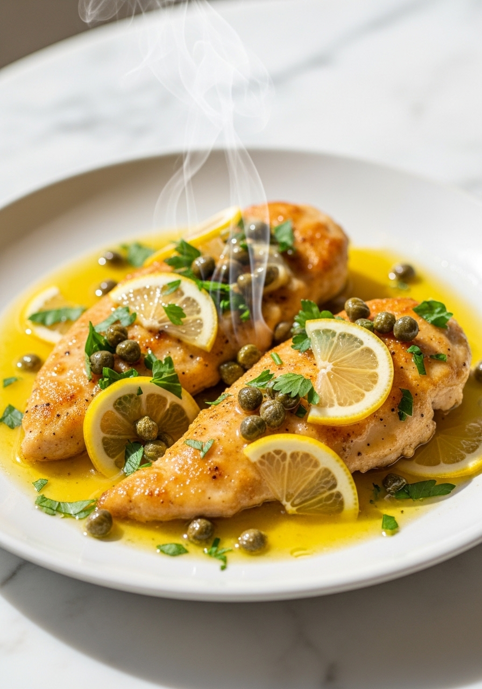
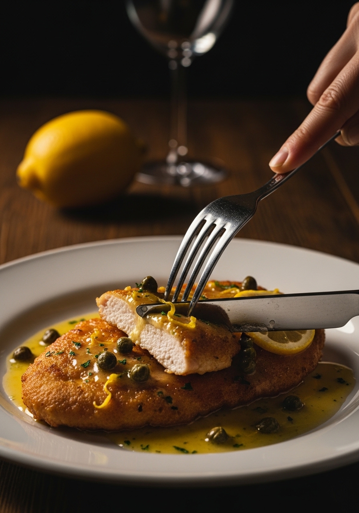

Il pollo alla piccata è il piatto italo-americano che tutti dovrebbero avere nella propria rotazione settimanale. Fettine sottili infarinate, dorate in padella, poi finite in una brillante salsa al burro, limone e capperi che si prepara in pochi minuti. Qualità da ristorante, fatica da cucina casalinga.

25 MinLa piccata è in realtà una tecnica di cottura italiana, non solo un piatto. 'Piccata' descrive carne o pesce tagliati sottili, infarinati e cotti nel burro con limone e vino. In Italia, il vitello piccata è l'originale — il pollo alla piccata è l'adattamento italo-americano che è diventato un piatto fisso dei ristoranti italiani negli Stati Uniti. La tecnica è la stessa, cambia solo la proteina.
La brillante salsa al limone e capperi si abbina meglio a contorni semplici e amidacei che possono assorbirla. Il capellino d'angelo condito con olio d'oliva è l'accompagnamento classico. Il purè di patate si abbina magnificamente. Gli asparagi o i broccoli saltati aggiungono una nota verde. Evita contorni pesanti e cremosi che competono con la brillantezza della salsa. Una semplice insalata verde condita con olio d'oliva è tutto quello che serve per completare il pasto.
Ingredienti
Procedimento

Il pollo alla piccata si conserva in frigo per 3 giorni in un contenitore ermetico. Riscalda delicatamente in padella a fuoco basso con un goccio di brodo per sciogliere la salsa. Evita il microonde — il pollo diventa gommoso e la salsa si separa.
Un vino bianco secco con buona acidità — Pinot Grigio, Sauvignon Blanc o Chardonnay vanno tutti bene. Evita i vini dolci. Se preferisci non usare il vino, sostituisci con brodo di pollo e aggiungi una spremitura extra di limone.
Sì — il piatto sarà meno sapido ma comunque delizioso. Alcune ricette sostituiscono le olive verdi tagliate sottili. Altre aggiungono un cucchiaio di senape di Digione per profondità senza il sapore dei capperi.
La temperatura interna deve raggiungere 74°C. Visivamente, i succhi devono essere chiari quando punzi la parte più spessa. A 1,2 cm di spessore, 3-4 minuti per lato a fuoco medio-alto è affidabile.
Il burro è stato aggiunto a una salsa troppo calda, o non l'hai incorporato correttamente. Togli prima la padella dal fuoco, poi aggiungi il burro freddo a spirale finché si emulsiona. Se si rompe, la salsa è troppo calda.
Sì — le cosce disossate e senza pelle funzionano benissimo e sono più indulgenti dei petti. Appiattiscile, cuocile leggermente di più (5 minuti per lato), e il risultato è spesso più saporito per il più alto contenuto di grasso.